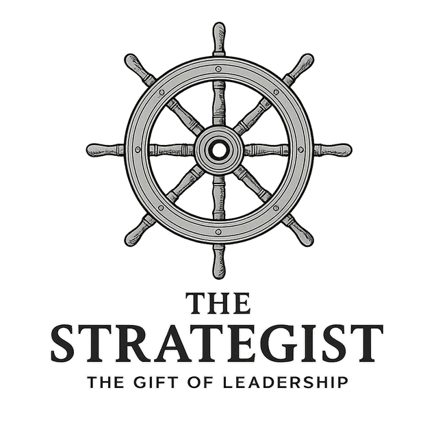

The Strategist carries a divine capacity to see future possibilities and architect the systems required to make them reality. They are natural visionaries and systematic builders, driven by the ability to envision what could be and the determination to create the pathways to achieve it.
"If it is to lead, do it diligently." — ROMANS 12:8
"Where there is no vision, the people perish." — PROVERBS 27:14
The Strategist instinctively thinks in terms of vision and systems. They naturally evaluate situations based on their alignment with long-term objectives and the systematic steps required to achieve them.
Strategists are energized by clear, compelling visions of the future and the opportunity to build systems that make those visions reality. They thrive when working toward meaningful, long-term goals.
They are compelled to create clear direction and systematic pathways toward meaningful goals. Their greatest satisfaction comes from seeing well-designed systems successfully achieve their intended outcomes.
They possess an exceptional ability to envision future possibilities and see the big picture in ways that others cannot.
They excel at designing and implementing systematic approaches that turn visions into achievable, step-by-step realities.
They have a natural ability to make decisions that align with long-term objectives rather than just addressing immediate concerns.
They are gifted at recognizing potential in others and creating opportunities for people to grow and contribute to larger objectives.
Their focus on big-picture vision can sometimes lead them to overlook important details or become impatient with necessary but mundane tasks.
Their ambitious visions and systematic approaches can sometimes feel overwhelming or unrealistic to others who don't share their strategic perspective.
Their long-term focus can make it challenging for them to respond effectively to immediate, urgent needs that don't fit into their strategic plans.
Leadership-oriented leaders guide through strategic vision and systematic development.
Every gift carries a holy conviction—and every conviction can collide with another's. Naming the clash is the first step toward honoring it.
The Strategist invests deeply in creating a comprehensive, long-term plan and demands diligence in its execution. This puts them in direct conflict with the Catalyst, who is wired to act on impulsive, revolutionary insights that can completely upend the Strategist's carefully laid plans.
The Strategist's eyes are fixed on the five-year vision. This can clash with the Servant, whose focus is on the immediate, practical needs of the day-to-day operation. The Strategist may see the Servant's concerns as minor distractions, while the Servant may see the Strategist as disconnected from the real work that keeps the organization functioning.
To maintain momentum, the Strategist is gifted at making timely, decisive judgments, often with incomplete information. This creates friction with the Erudite, who needs to achieve a comprehensive analysis before feeling comfortable with a decision, a process that can feel like a critical delay to the goal-oriented Strategist.
The Strategist views a meeting as a tool to achieve a specific set of objectives within a given timeframe. This frequently conflicts with the Enthusiast, who sees the meeting as an opportunity for spontaneous connection and team-building, which the Strategist can view as being off-topic and inefficient.
The Strategist is often willing to make significant financial investments or even take on debt to achieve a critical part of their long-range vision. This can be a point of contention with the more prudent Host, who is focused on managing resources wisely and ensuring long-term financial stability.
The Strategist's primary metric for success is measurable progress toward the goal. This can clash with the Lover, whose primary concern is the emotional well-being of the team. The Strategist can become impatient when the need to process people's feelings is seen as delaying the plan's progress.
The Strategist appears in 15 of the 35 archetypes of the soul. When it joins two other dominant gifts, it takes on a distinct expression.
To architect world-changing movements built on unimpeachable truth and brilliant strategy.
Read the archetype → 6To translate a grand, disruptive vision into a practical, step-by-step plan executed with excellence.
Read the archetype → 7To architect and fund large-scale, transformative movements and institutions.
Read the archetype → 8To fuse a bold, strategic vision with an infectious passion that mobilizes and inspires teams.
Read the archetype → 9To lead with decisive, transformative vision while fiercely protecting the well-being of the people involved.
Read the archetype → 10To design and execute complex projects with a masterful blend of strategic planning and meticulous craftsmanship.
Read the archetype → 11To build enduring, well-resourced institutions based on deep research and sound strategic planning.
Read the archetype → 12To develop people by combining clear, strategic guidance with inspiring, motivational coaching.
Read the archetype → 13To lead with profound wisdom and a clear plan, while providing deep, pastoral care for the team.
Read the archetype → 17To build and manage the operational systems that provide for a community's long-term practical needs.
Read the archetype → 23To lead teams toward a goal by fostering a culture of profound psychological safety, connection, and inspiration.
Read the archetype → 32To lead teams to execute a plan with excellence by fostering a positive, high-morale, and collaborative environment.
Read the archetype → 33To build great things while ensuring the process is practical, excellent, and deeply humane.
Read the archetype → 34To build and grow organizations by aligning a compelling vision, strategic resources, and an inspired culture.
Read the archetype → 35To lead with a clear vision for success, generously providing for and protecting the people on the journey.
Read the archetype →Where there is no vision, the people perish; but blessed is he who keeps the law.Proverbs 29:18: